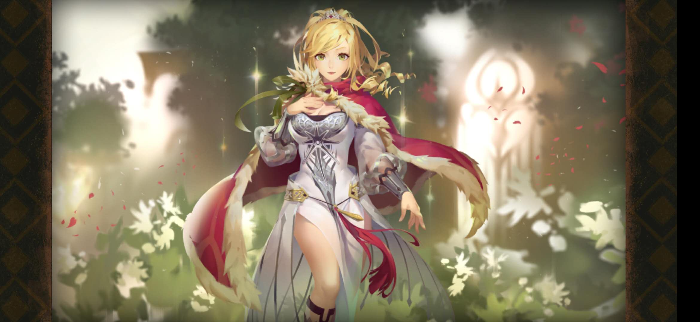
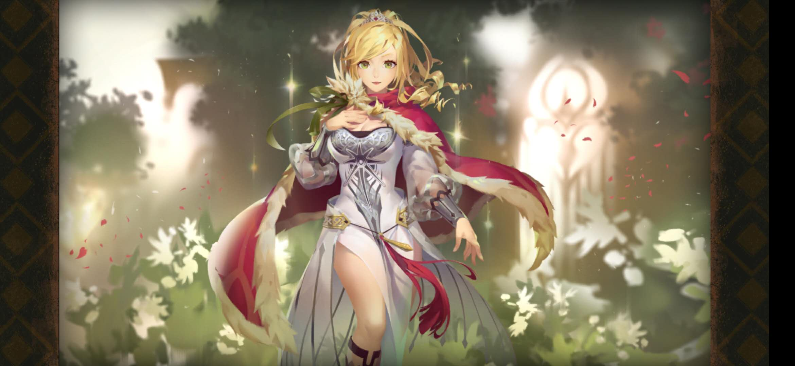
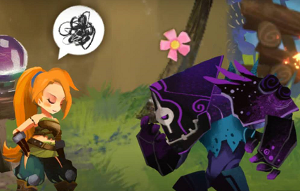

游戏体验与分析
万象物语
基本资源
- 库伦：基本资源
- 魂晶碎片：高阶货币，可发挥部分透晶石的作用
- 透晶石：现实货币，最主要的用途是赋魂（抽卡）
- 魂能：用来升级人物
- 魂光粉尘：增加每日添加活动的次数上限
基本玩法
回合制消除 剧情 养成

白、黄、紫代表不同人物，滑屏连接同类型颜色可以发动不同的技能（目前已知的连接方式只有单消/二消/四消），连接的颜色球会消失，右侧颜色球向左自动填补；左侧圆圈内为参谋技，右侧圆圈内为宝箱内掉落的技能。本质上是俄罗斯方块和横向格斗游戏玩法的融合，使得游戏获得了一定的策略性。
美术风格
奇幻、二次元和卡通三种风格并行。在人物立绘、场景绘制、界面美工上都有**奇幻的风格，冷色调较多，重结构轻细节**；但有部分人物又更靠近二次元一些；在剧情和战斗界面则是卡通可爱风的人物模型。下左一图为充满东方奇幻风格的新手引导里的小姐姐，下中图为主线剧情的主角太阳王国公主安洁莉娅，下右图为剧情内Q版可爱的人物模型
 


新手引导
1.剧情活泼：采用表情符号+文字的文本格式，让人物的语气神态更容易被玩家体会

2.人物鲜活：文案人员通过细节刻画人物的功力很足，目前接触到的人物个个都很有特色，还没有见到大众脸：对一切都充满好奇和热情的蒂卡、充满荣誉感的王国治安官娜雅、沉稳有礼的庞、天真理想的安洁公主、外表厉色内心憨厚的刃庞言必称“在下”、“阁下”，娜雅常常提到其王国治安官的身份，刃在面对胡闹的安洁时的那句“八嘎”简直不要太有爱